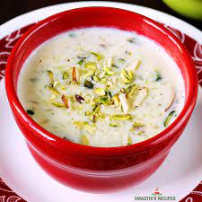

kheer

Ingredient
- 1 liter full-fat milk
- 1/4 cup basmati rice
Steps
- Rinse the basmati rice in water a couple of times, then soak it in water for 30 minutes. After soaking, drain the water.
- in a heavy-bottomed pan, pour the milk and bring it to a boil over medium heat. Stir occasionally to prevent the milk from sticking to the bottom of the pan.
Return to home page.